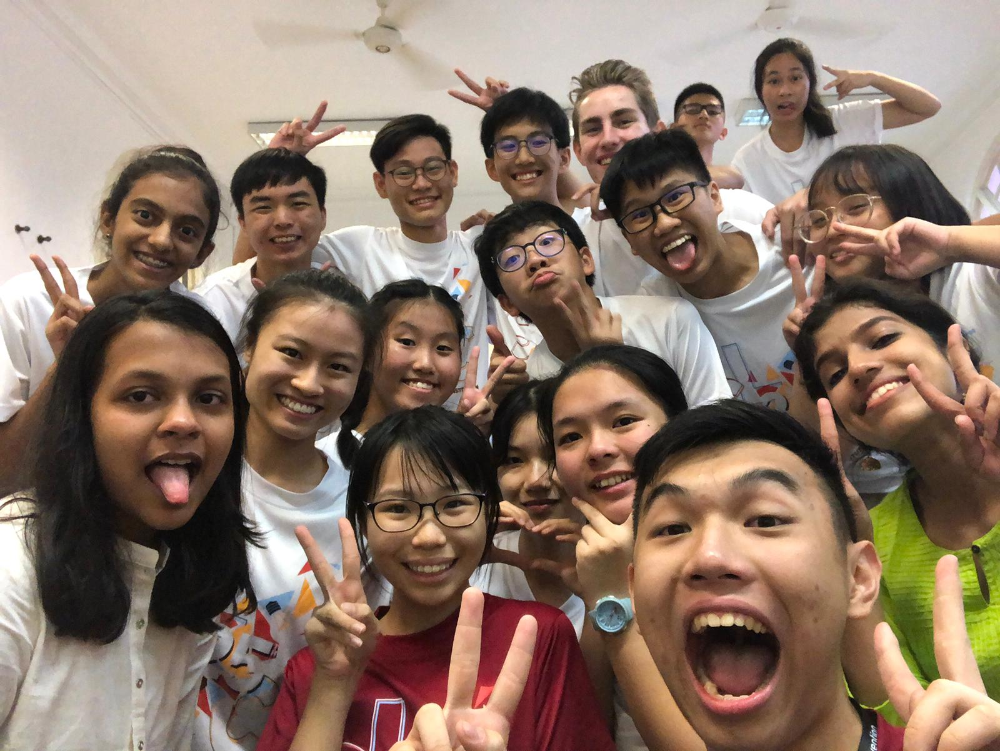

Youth Faculty 9: Community Service
Under Youth Assembly 3: Holistic Education
Hi we are YF 9 Faraday and our topic is about Community Service. To begin, what is Community Service? Well to put it simply, it is voluntary work intended to help people in a particular area, and in the context of this year's theme, community service is conducted by students to help beneficiaries such as the elderly, underprivileged youth to name a few examples.
Hence, we would like to explore the effectiveness of community service in providing a holistic education for students and the current challenges that prevent community service from becoming a platform to impart 21st century skills in them. From there, we brainstormed on solutions that would bring about positive change to the current educational framework.
Some problems that we discovered were the unwillingness of students and lack of interest on their part, the question of which matters more, the results of community service or the learning journey that the students go through and the social stigma that comes about from community service.
Hence we came up with these solutions.
-
All community service projects to have both direct and indirect community service components, but with direct taking priority.
After evaluating the pros and cons of direct and indirect service, we realised that both had value in ensuring students have a quality community service experience.
For a win-win situation, both direct and indirect community service should be introduced to the students within the same community project.
Direct community service being be prioritized and done first by students to give them a taste of serving the community so that when they move on to indirect, they would not lose sight of the initial objective of serving the community.
The new model should make clear the link between direct and indirect service so students are able to use both methods of service to contribute to the community. -
Community Service to be mandatory for all students, with 1 self-initiated activity compulsory project throughout their academic life.
Let students gain the compulsory experience of taking charge of their own year-long CIP project.
Students get to choose to embark on a community service project which targets the beneficiary of their choice
This is in the hopes that they would have more interest and passion in serving that organisation, as it is self-planned according to their own interests and personal timelines.
In order to most effectively help their beneficiaries, they would thus need to conduct adequate research on the beneficiaries needs so as to understand which areas they can most productively dedicate their time and resources into.
Responsibility and a deeper appreciation for school is cultivated in students and when they are asked to self initiate their own community service projects
Through the planning process, students will develop soft skills that would be hard to learn outside of the classroom, such as time management, leadership, teamwork and many others -
Changing mindsets through re-branding community service
Currently, community service is viewed negatively, either seen as a chore for many volunteers, a material source of help for beneficiaries, or a form of criminal punishment.
Through national education, mindsets of volunteers and beneficiaries should be changed. Such a re-branding of community service can facilitate a more meaningful relationship between the volunteers and beneficiaries, creating a more sustainable form of service.
Beneficiaries can be encouraged to be more open to direct service rather than just wanting volunteers to donate material goods. One example would be a Hwa Chong Overseas Camp where during the overseas old folks home were more focused on the donation we gave rather than the interactions with them.
Volunteers should be more proactive in engaging the beneficiaries in meaningful interactions for example showing care and concern for the organisation that their serving.
Qualitative assessments: projects should be qualitatively assessed on how well they served the community, instead of the number of community hours obtained
Examples of qualitative assessments are the use of feedback forms, certificates of recognition, presentations on service completed etc.
Schools to emphasise on student autonomy, even during school-initiated service projects, so that students feel that community service is not simply forced upon them.
The Lens
The above video is in the form of a news report from the near future after the solution that we proposed above has been implemented. we explore the viewpoints of different stakeholders and how they have adapted/responded to our solution. We hope you enjoy! :)
Exhibition
Our exhibition includes all the above research that we have done and compiled over the past few days.
(here we would include your exhibition boards, hopefully you left it in ops room)
Thank You!!!
To our facils, thank you for being more than just a facil to us, we really appreciate the friendship that we have forged the past 3 days.
To the OT, although your hard work goes unseen, the impact of it could definitely be felt by us as we definitely had a great time.
To our fellow delegates, really grateful for the time that we spent together and lets meet up soon ya!!"